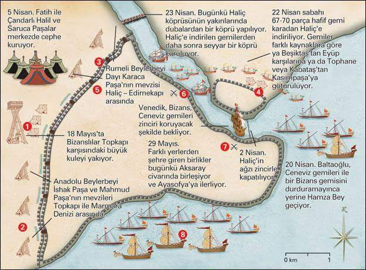
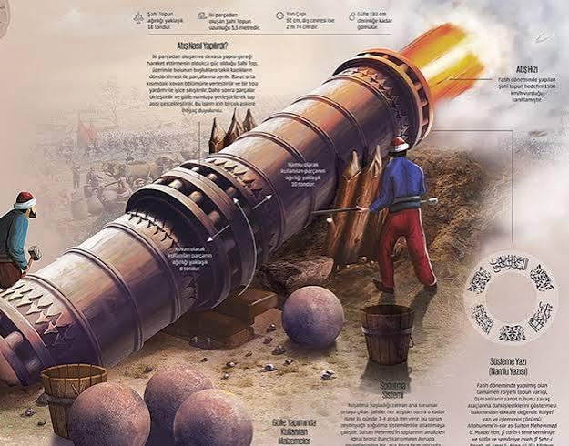
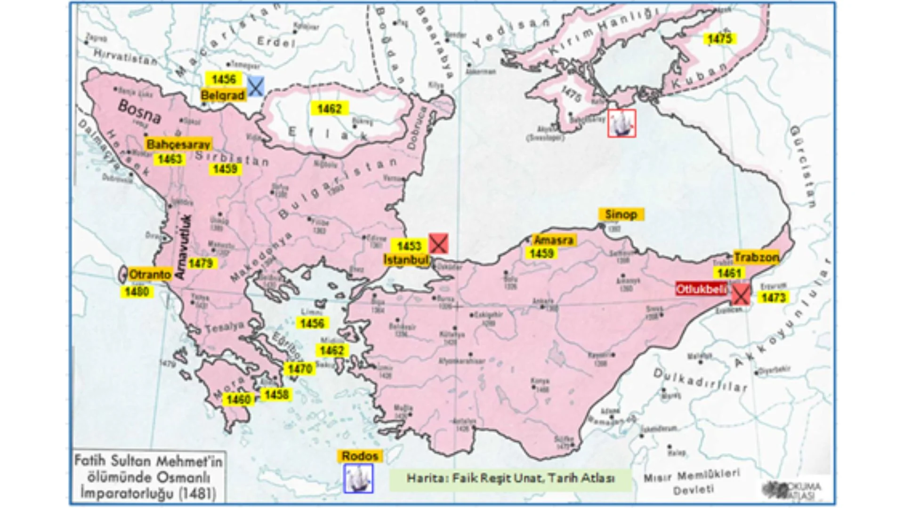
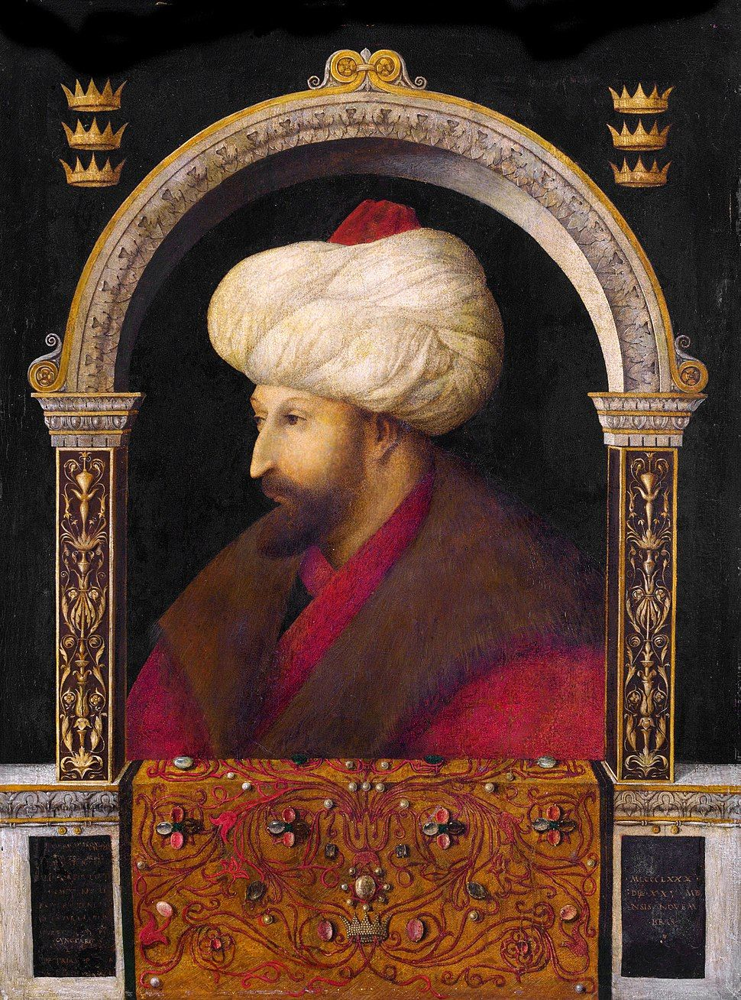

Fetih sürecine, kuşatma teknolojilerine ve dönemin haritalarına ait görsel arşiv.

İstanbul Kuşatması Kuşbakışı Planı (1453)
Kuşatma sırasındaki birliklerin mevzilerini, Haliç'e gerilen zinciri ve 22 Nisan sabahı gemilerin karadan yürütülerek Haliç'e indirilme rotasını gösteren tarihi kroki.

Şahi Topu ve Teknik Özellikleri
Fatih Sultan Mehmet döneminde döktürülen, yaklaşık 18 ton ağırlığında ve 5,5 metre uzunluğundaki devasa kuşatma topunun çalışma prensibini ve gülle yapısını anlatan şema.

1481 Yılında Osmanlı İmparatorluğu Sınırları
Fatih Sultan Mehmet'in saltanatının son yılında (1481) imparatorluğun Anadolu, Rumeli, Balkanlar ve Kırım'daki genişleme sınırlarını gösteren siyasi harita.

Fatih Sultan Mehmet Portresi
Venedikli ressam Gentile Bellini tarafından 1480 yılında İstanbul'da çizilen, Fatih Sultan Mehmet'in dünyaca ünlü orijinal yağlı boya portresi.